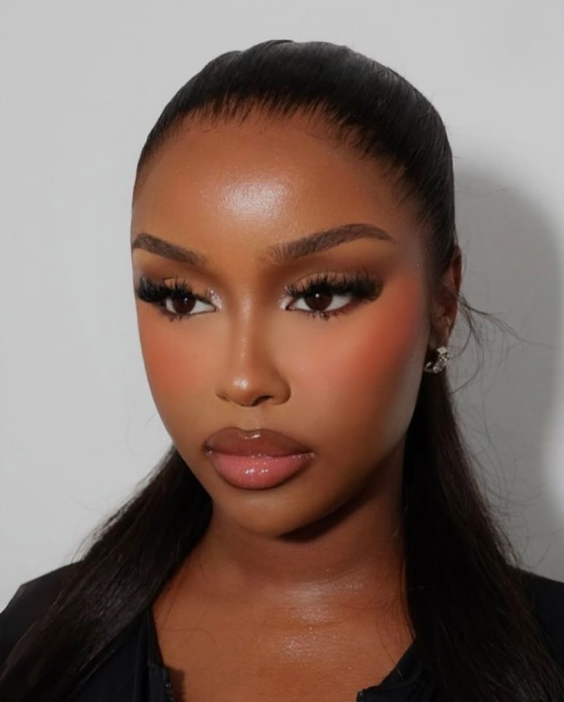
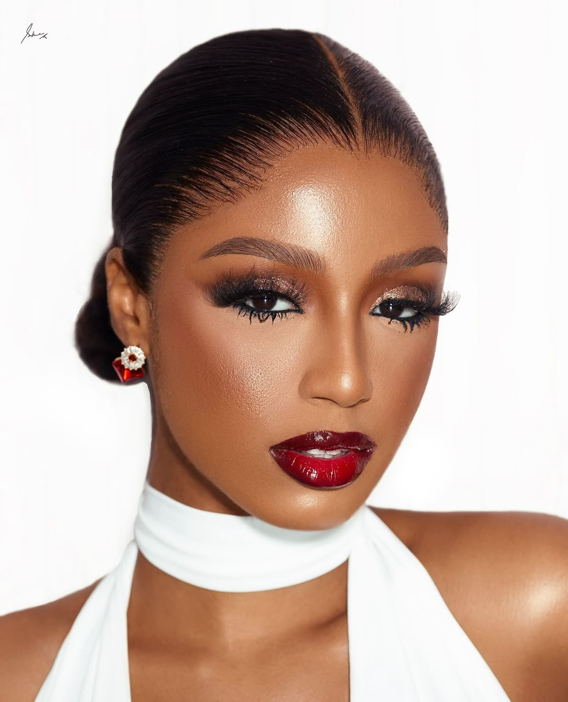
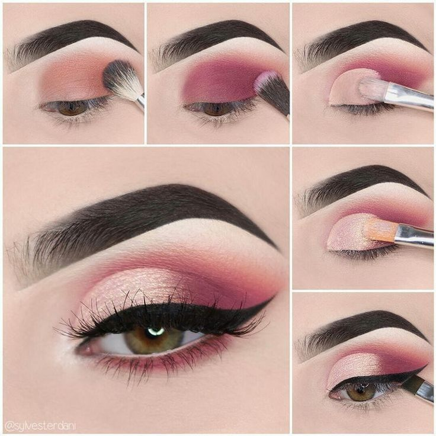
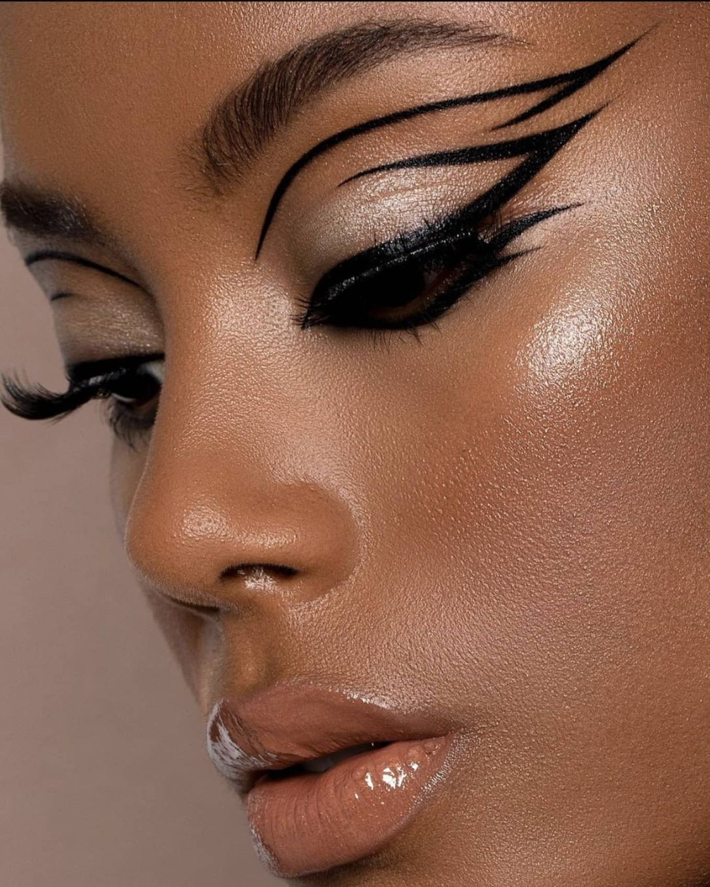

💄 Iconic Makeup Looks
Explore five stunning makeup styles with images from our local folder.
Look Inspiration Gallery
| Look Name | Key Products | Best For | Image |
|---|---|---|---|
| Soft Glam | Peach tones, shimmer | Daytime |
 softglam.jpg
|
| Bold Lip | Red lipstick, minimal eyes | Evening |
 boldlip.jpg
|
| Cut Crease | Concealer, dark shadow | Parties |
 cutcrease.jpg
|
| No-Makeup | Tinted moisturizer, mascara | Everyday |

no makeup looks.jpg
|
| Graphic Liner | Liquid liner, bright colors | Festivals |
 graphicliner.jpg
|
✨ Detailed Descriptions
Soft Glam: A blend of neutral mattes with a pop of shimmer on the lids. It's polished but not overdone—perfect for office or brunch. Features peach tones and subtle shimmer for that warm, romantic glow.
Bold Lip: Let your lips do the talking! Pair a classic red or berry stain with groomed brows and a touch of mascara for instant glamour. This timeless look is perfect for evening events.
Cut Crease: This dramatic eye uses concealer to carve out the crease, creating depth and dimension. Ideal for photoshoots or nights out when you want to make a statement.
No-Makeup Look: All about skin-like finishes. Use a dewy foundation, cream blush, and curled lashes for a fresh-faced glow that looks naturally beautiful.
Graphic Liner: Break the rules with geometric shapes and neon liners. It's an artistic expression that turns eyes into art. Perfect for festivals and creative events.
📁 Images loaded from: makeup website folder
Make sure all JPG files are in the same folder as this HTML file